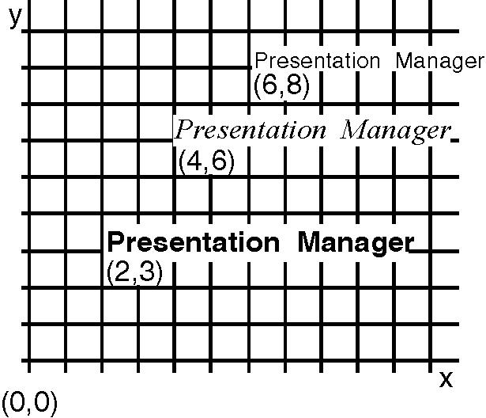

To draw a string of one or more graphics characters from the current font, call GpiCharString. The string starts at the current position and, when it has been drawn, the new current position is the point at which the next character would be, had there been one.
To draw the string starting at a position other than the current position, call GpiCharStringAt. This is equivalent to calling GpiSetCurrentPosition or GpiMove, followed by GpiCharString. You supply the text of the character string as a parameter to the appropriate GPI function.
Note: You also can call WinDrawText, which draws text to the screen a line at a time. WinDrawText differs from the GpiCharString... functions in that WinDrawText ignores the DM_RETAIN drawing mode and can only be used to draw to a window device context.
The following figure shows some examples of a character string primitive.

The Character String Primitive
This example shows the string Presentation Manager drawn from different logical fonts.